Portfolio
Analytics Dashboards
Over the years, I have developed several business intelligence and social media monitoring dashboards using various tools, such as PowerBi, Tableau, and Looker.
Geospatial Flood Predictions
 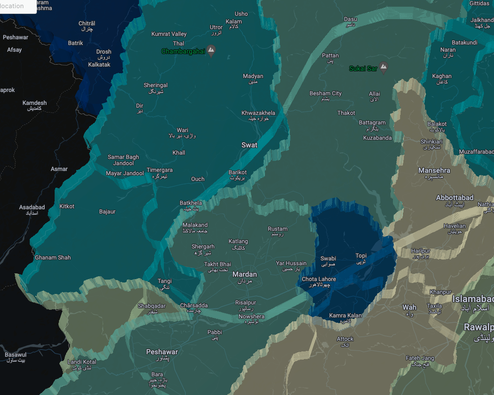
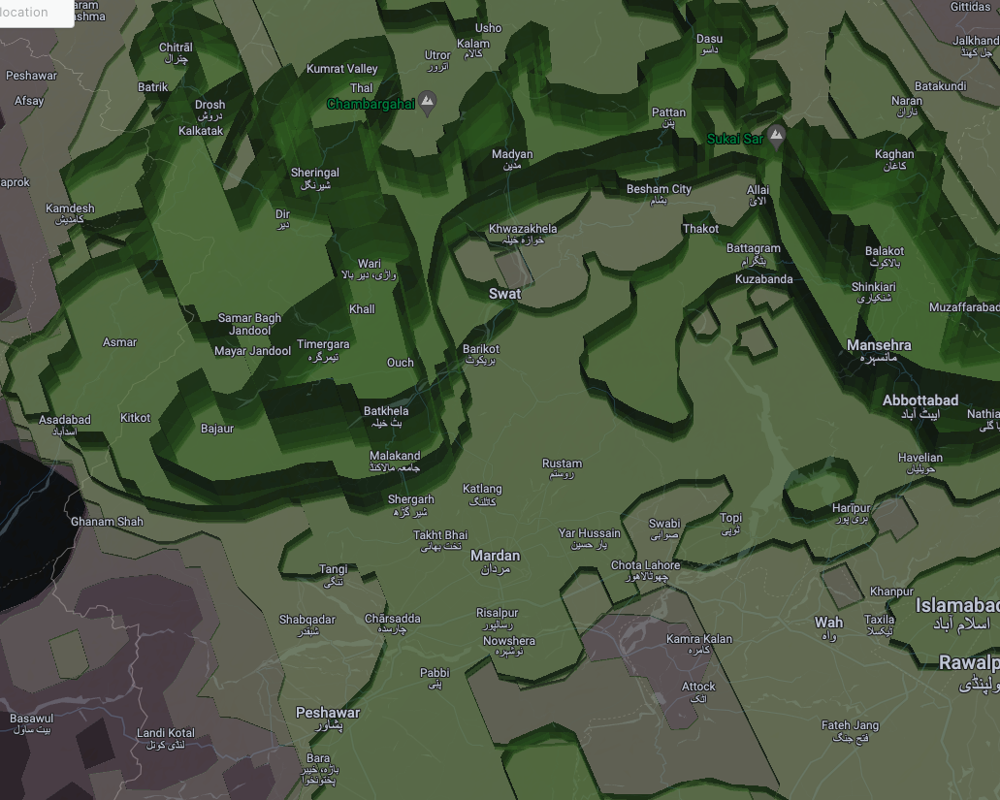
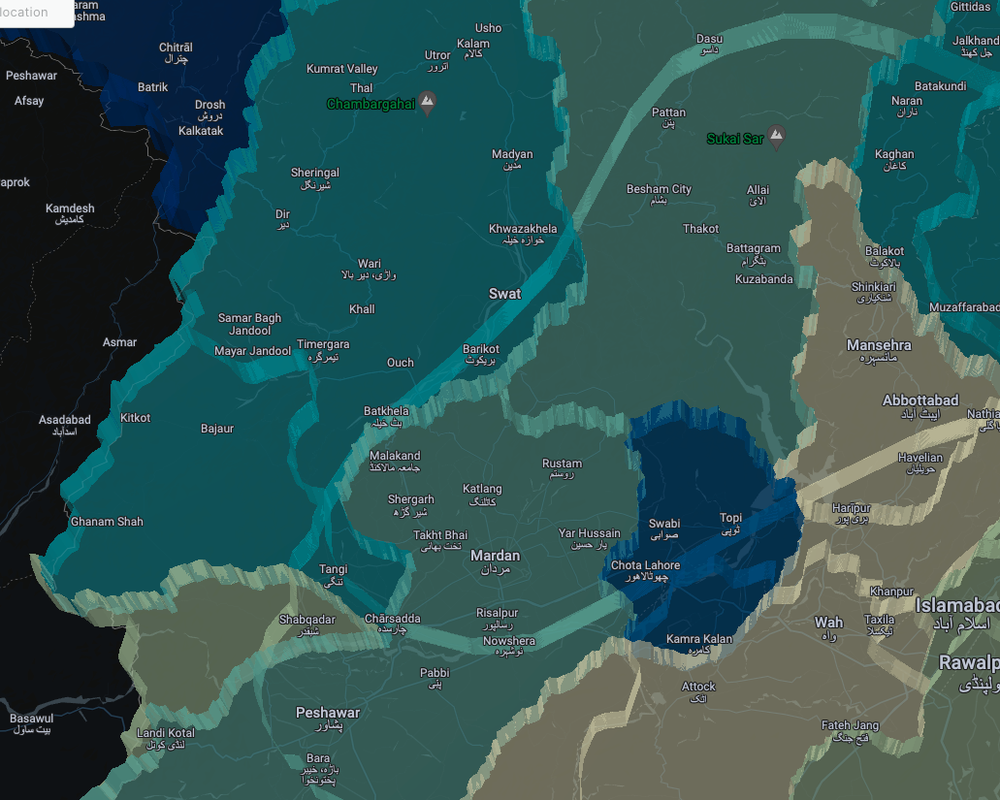
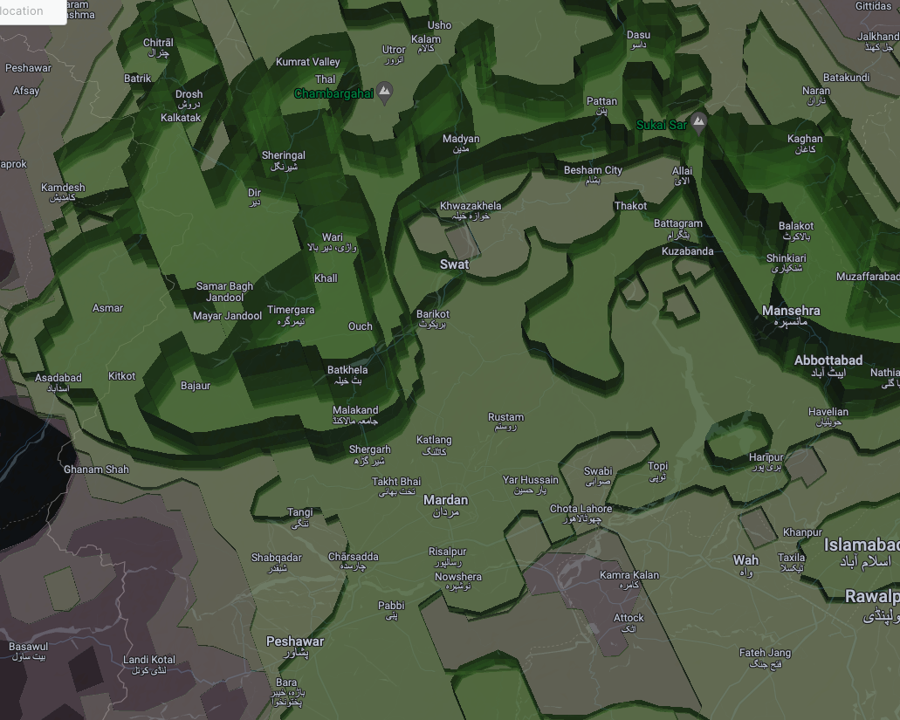

These maps visualize the 3-D flood risk in Pakistan based on precipitation data using CARTO, created for the 2024 SatSummit NASA Lifelines Conference.
Visualizing a life, uprooted
 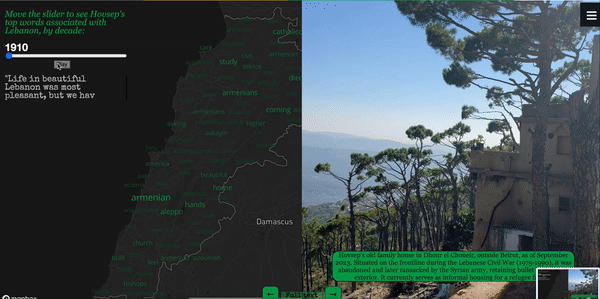
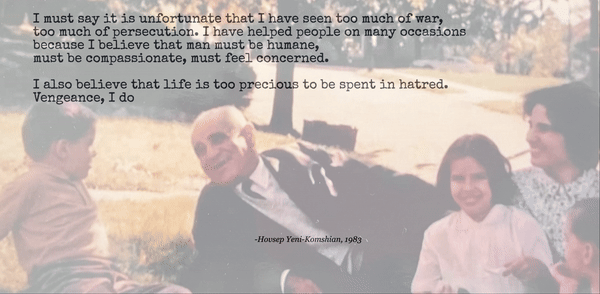
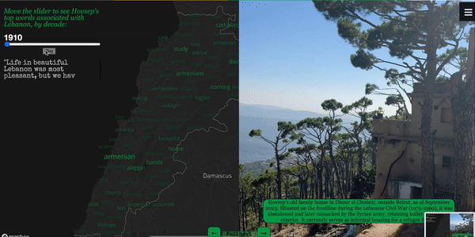
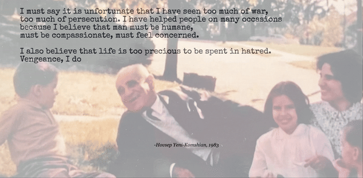
 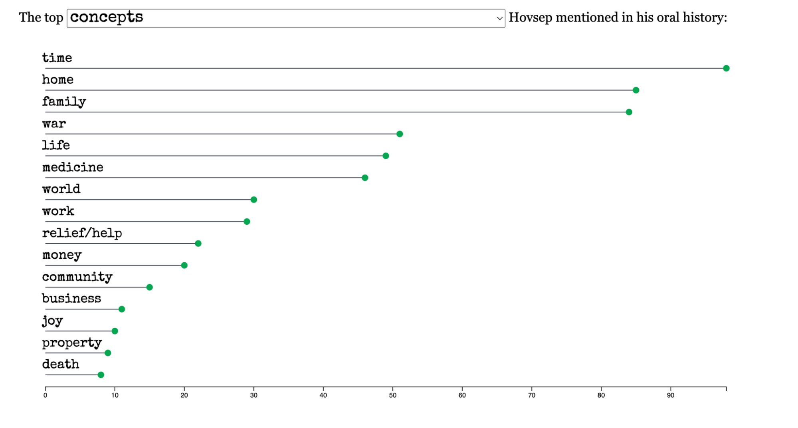
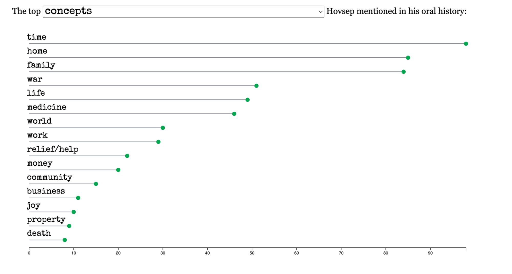
 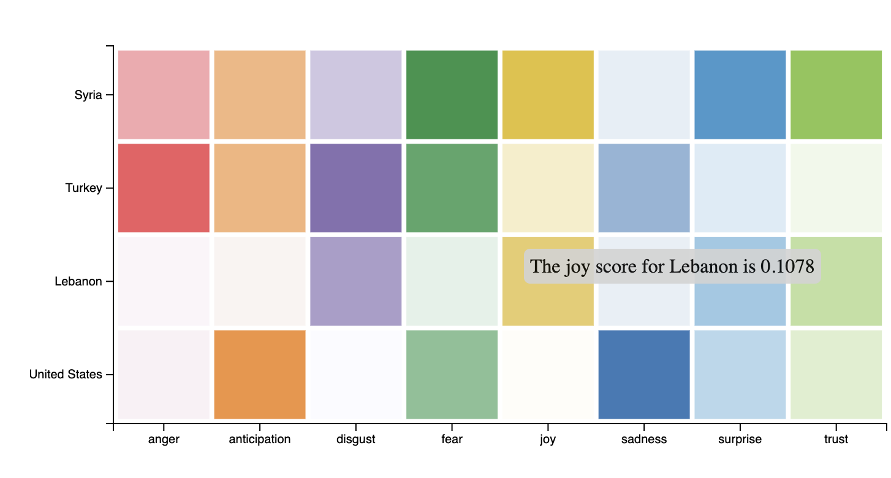
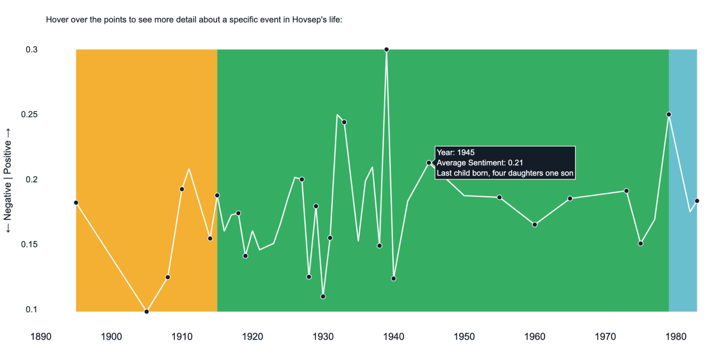
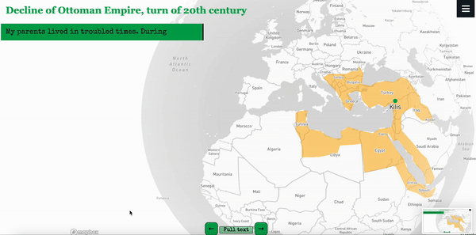
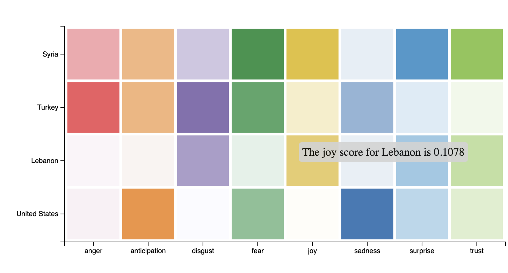
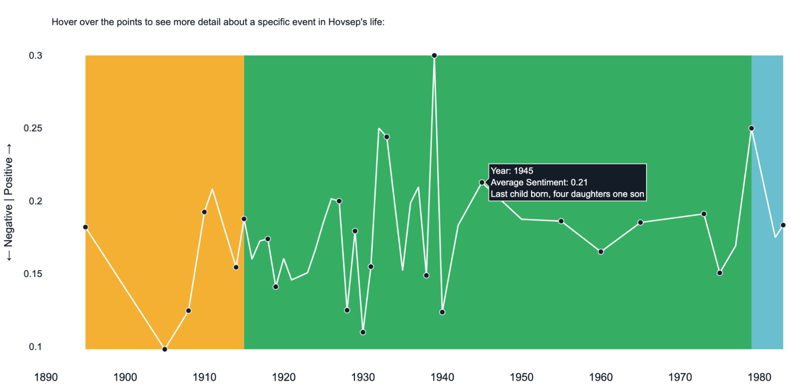
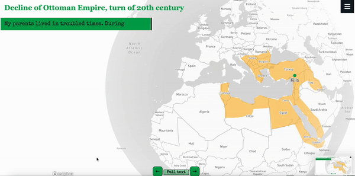
This project is an interactive data visualization narrative of the oral history of my great-grandfather, born to an Armenian family in Cilicia, Ottoman Empire. It explores his learnings, loves, and losses through a genocide, civil war, finding love, building and re-building home across three countries. In the first part, Python's NLTK library is used analyze the main themes and sentiments of Hovsep's life, visualized with d3.js and Plotly. The second part is an abridged visual narrative, using a mix of interactive maps, historic footage, family photos and recent travel photos in Lebanon and Eastern Turkey. This project uses Plotly, d3.js, Mapbox GL JS, among other tools.
Exploring global trade links on the Swahili coast
This data visualization exploration, created with Tableau storyboard, explores global maritime trade links, both historic and present, of the Swahili coast with a focus on the UAE and China. Visualizations include a historical shipwreck map, an interactive mapping of Kenya's top shipping partners through maritime shipping connectivity index data, and a sentiment analysis conducted in R of local media articles written about the new Port of Lamu.
Visualizing the LGBTQ Network Survey
The New York State LGBTQ+ Health and Human Services Network Needs Assessment is among the most comprehensive LGBTQ health surveys in the U.S. This interactive digital overview of the report highlights key findings, including intersectional disparities in care/access and the critical need for mental health support. It aims to highlight the needs and service barriers faced by this underserved community. This project uses d3.js.